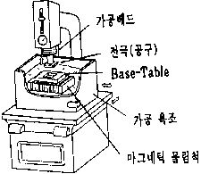
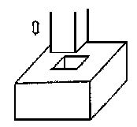
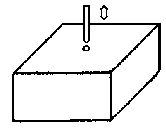
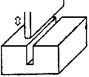
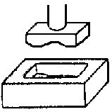

방전가공기 (E.D.M)
|
구조및개요 |
 일어나는 방전효과로 CNC 전극제어에 의해 절삭하는 M/C (ELECTRIC DISCHARGE MACHINE) * 전극의 재질은 통상구리 |
||||||||||||
|
용 도 |
-일반적인 가공기에서 가공이 용이하지 않는 형상가공이나 열처리된 소지의 고정도 가공 -기본적인 적용예 (일반적으로 비관통형상에 많이 적용)    <사각 HOLE> <작은 구멍> <좁은 간격의 channel> <난해한 형상> |
||||||||||||
|
GAP의크기 |
<비고> ①황상과 정삭의 공수비 황삭 : 정삭 = 1 : 1.5 ②통상적으로 1차 황삭 가공후 2차로 정삭 가공 |
||||||||||||
|
피가공물의 재질별 가공성 |
<비고>① 피가공물은 반드시 도체이어야 함. ② 피가공물의 열처리 時와 비열처리 時 가공공수 비교 열처리물 : 비열처리물 = 1.2 : 1 |
||||||||||||
|
조 도 |
가공가능한 조도 : ▽▽▽ 정밀조도 가공 : 일반조도 가공과의 공수비 = 1.5 : 1 |